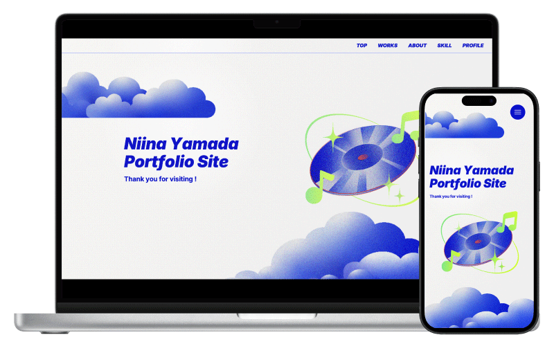
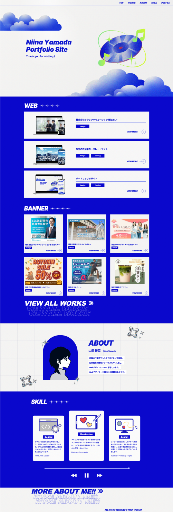
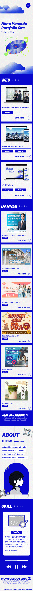

ポートフォリオサイト

- 概要
- 自身の経歴や制作実績、スキルを採用担当者の方に分かりやすく伝えることを目的として、ポートフォリオサイトを制作しました。
- 目的
-
自分がデザイナーとして何ができるかを伝える。
書類では伝わらない自分の人柄や価値観を伝える。 - ターゲット
- 採用担当者の方々
- 制作にあたって
- 採用担当者の方々が多忙な中でも必要な情報をスムーズに把握できるよう、シンプルで視認性の高いレイアウトをベースに構築しました。一目で直感的にスキルが伝わる設計を心掛けつつ、自身の好きな音楽をモチーフとして取り入れることで、単なる情報整理に留まらない自分らしさや感性も表現できるポートフォリオを目指しました。
- デザイン
- 自分らしさを表現しながら、サイト全体の印象に統一感を持たせることを重視しました。音楽が好きな自分を映し出すため、CDモチーフをメインビジュアルに採用して独自の世界観を構成。さらにノイズグラデーションやY3Kを感じさせる光沢感のあるモチーフを掛け合わせることで、個性とトレンド感を演出し、記憶に残るビジュアルに仕上げました。
- カラー設計
-
信頼感や落ち着きを与える青をメインカラーに、灰色をサブカラーとして全体を落ち着いたトーンで構成しました。
アクセントカラーの黄色と赤はごく僅かな使用に留めることで、世界観を壊すことなく、本当に目立たせたい部分が際立つようメリハリをつけています。 - 制作期間
- 企画・ワイヤーフレーム 2日間 デザイン 2週間 コーディング 2週間
- 使用したツール
- Illustrator / Figma / Procreate / Visual Studio Code / Codex
 概要
概要
